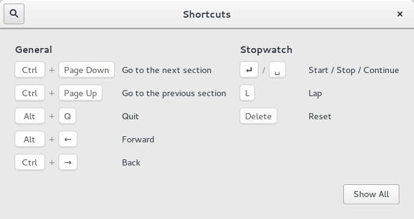

| Top |
Object Hierarchy
GObject ╰── GInitiallyUnowned ╰── GtkWidget ╰── GtkContainer ╰── GtkBin ╰── GtkWindow ╰── GtkShortcutsWindow
Description
A GtkShortcutsWindow shows brief information about the keyboard shortcuts and gestures of an application. The shortcuts can be grouped, and you can have multiple sections in this window, corresponding to the major modes of your application.
Additionally, the shortcuts can be filtered by the current view, to avoid showing information that is not relevant in the current application context.
The recommended way to construct a GtkShortcutsWindow is with GtkBuilder, by populating a GtkShortcutsWindow with one or more GtkShortcutsSection objects, which contain GtkShortcutsGroups that in turn contain objects of class GtkShortcutsShortcut.
A simple example:

This example has as single section. As you can see, the shortcut groups are arranged in columns, and spread across several pages if there are too many to find on a single page.
The .ui file for this example can be found here.
An example with multiple views:

This example shows a GtkShortcutsWindow that has been configured to show only the shortcuts relevant to the "stopwatch" view.
The .ui file for this example can be found here.
An example with multiple sections:

This example shows a GtkShortcutsWindow with two sections, "Editor Shortcuts" and "Terminal Shortcuts".
The .ui file for this example can be found here.
Property Details
The “section-name” property
“section-name” gchar *
The name of the section to show.
This should be the section-name of one of the GtkShortcutsSection objects that are in this shortcuts window.
Flags: Read / Write
Default value: "internal-search"
The “view-name” property
“view-name” gchar *
The view name by which to filter the contents.
This should correspond to the “view” property of some of the GtkShortcutsGroup objects that are inside this shortcuts window.
Set this to NULL to show all groups.
Flags: Read / Write
Default value: NULL
Signal Details
The “close” signal
void user_function (GtkShortcutsWindow *arg0, gpointer user_data)
The ::close signal is a keybinding signal which gets emitted when the user uses a keybinding to close the window.
The default binding for this signal is the Escape key.
Flags: Action
The “search” signal
void user_function (GtkShortcutsWindow *arg0, gpointer user_data)
The ::search signal is a keybinding signal which gets emitted when the user uses a keybinding to start a search.
The default binding for this signal is Control-F.
Flags: Action